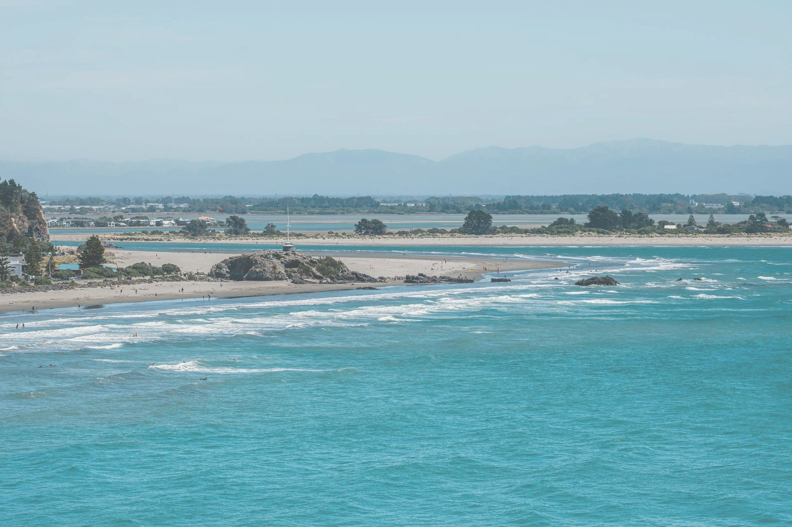
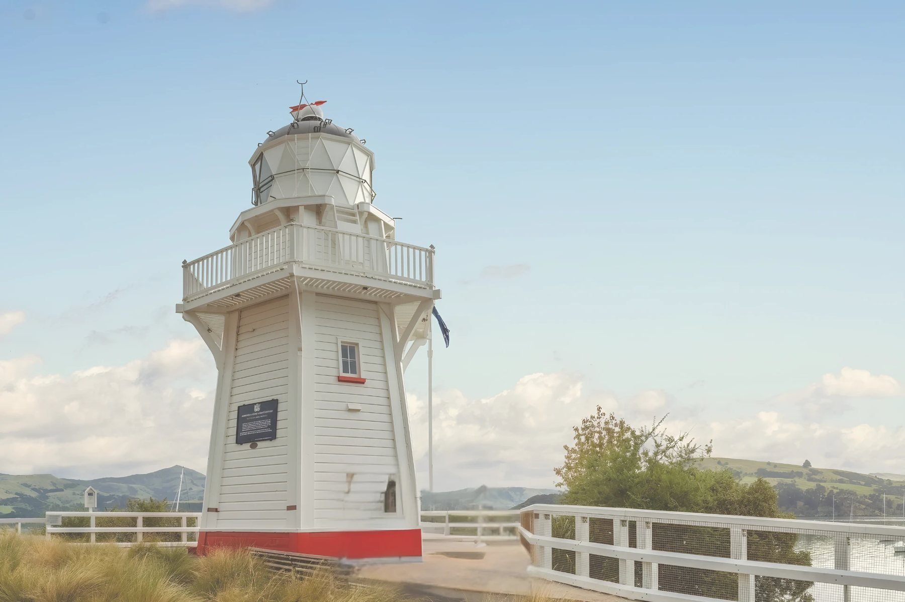

Experience & Design
Brand identity, UX and website design shaped around how your customers think, feel and decide.
Websites · Brands · Digital growth
A Christchurch design and technology studio, crafting beautiful websites and quietly powerful marketing for businesses that want to look as good as they are.

( 01 ) The studio
We pair a designer's eye with an engineer's precision — so your website feels calm and considered, and works beautifully underneath.
( 02 ) What we do
Design, development and marketing under one roof, so nothing is lost between them.
Brand identity, UX and website design shaped around how your customers think, feel and decide.
Fast, secure, accessible builds you can manage yourself, with the hosting, integrations and network care handled properly.
SEO, analytics and campaigns that bring the right people to your door, measured honestly and improved month by month.
( 03 ) Selected work
Live websites we have designed and launched. Open the case studies to see how each one came together.
All case studies
Our name
Like light on water — clear, calm and full of life.
Tova means good. It's a small word we carry into everything we make, and we hope it's the first one that comes to mind when you think of working with us.
( 04 ) About us
We live in typography, user journeys and brand, and in code, networks and the problems that don't come with instructions. Together we design what can be built — and build what's been beautifully designed.
We're based in Ōtautahi Christchurch, a short drive from the bays that shape our work, and we work with businesses right across Aotearoa.
Our storyCo-founder
The designer
Design, UX & brand
Shapes how every website looks, feels and works for the people who use it, and how it gets found.
Co-founder
The engineer
Engineering & strategy
Builds the technology behind each website and keeps it fast, secure and reliable.
( 05 ) How we work
A real conversation about your business, your people and where you want to go.
Strategy and design you can see, click through and refine before we build.
Clean, fast, accessible code, tested carefully and handed over with training.
We measure, improve and report back in plain language, every month.
Pricing
From NZ$2,900
Up to 5 pages. A professional online presence for startups, sole traders and small businesses
From NZ$5,900
Up to 10 pages. Our recommended package: a strategic, conversion-focused website built to bring in more enquiries
From NZ$9,900
Up to 20 pages. Advanced functionality and integrations for established businesses
After launch, optional monthly care plans keep your site hosted, secure and up to date: Essential NZ$99, Growth Care NZ$179 or Premium Care NZ$299 a month.
Prices exclude GST. Your website is paid for upfront: half to start and half before launch, or in three stages. We confirm every project in a written quote, so you know the full cost before we begin. Read the questions we're asked most.
Tell us a little about your business and what you're dreaming of. We'll reply within one working day.
Enquire now enquiries@tovadigital.co.nz